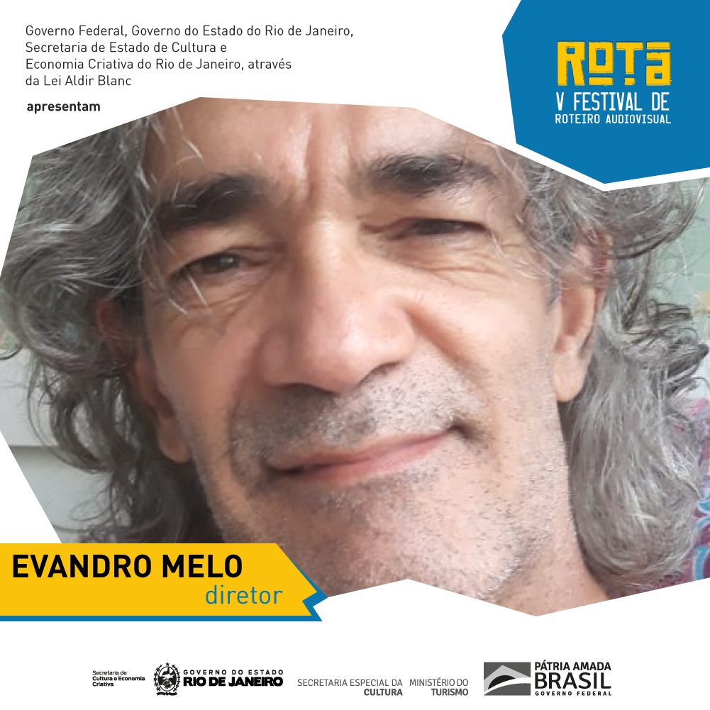
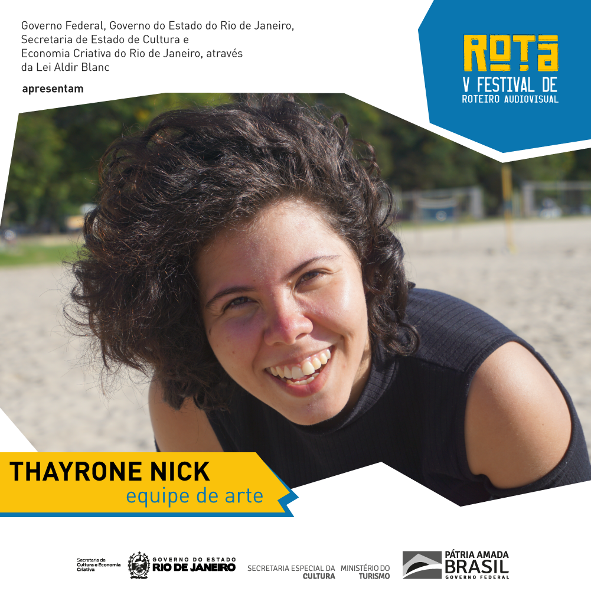

Gabriela Liuzzi Dalmasso (Diretora) - *Gabriela Liuzzi Dalmasso é formada em roteiro cinematográfico pela Escola de Cinema Darcy Ribeiro e fez diversos cursos livres de roteiro. É diretora do ROTA - Festival de Roteiro Audiovisual, sócia da Aiuru Filmes e do coletivo Audiovisionários. Foi finalista do Laboratório Novos Roteiristas e consultora do Laboratório de Curtas Luzes da Cidade. Dirigiu e roteirizou o curta "Com os pés na cabeça", dirigiu o curta “A Trilha” e foi assistente de direção em 4 curtas. Foi jurada do II Prêmio Rede Sina.
Evandro Melo (Diretor) - Ator formado desde 1988 pela Escola de Teatro Martins Pena. Dá aulas de interpretação como convidado em Angola, para onde levou a obra de Nelson Rodrigues com ineditismo ao palco, além de filmar um documentário sobre a Companhia de Teatro Horizonte Njinga Mbande de Luanda, em fase de edição. Desenvolve atualmente um roteiro de ficção em animação com recortes documentais sobre os índios isolados da região Uru Eu Wau Wau, de Rondônia. E é um dos fundadores e diretores do ROTA.
Carla Perozzo (Diretora) - Professora de filosofia com especialização em ética, mestrado em história da filosofia e pesquisa de doutorado em ética, todos pela UFRJ. Em 2016 foi estudar roteiro na Escola de Cinema Darcy Ribeiro e conheceu seus atuais sócios, com os quais, em 2017, criou o ROTA Festival de Roteiro Audiovisual. Seguiu seus estudos de roteiro na Roteiraria e atualmente desenvolve um projeto de série que aborda uma de suas grandes paixões: a relação dos humanos com os animais, em especial, os felinos.
Tiago Scorza (Produtor executivo) - Formado em Cinema pela UFF, atuo no mercado audiovisual como Diretor de Fotografia e Operador de Câmera, além de ter experiência como Diretor, Roteirista e Editor/montador. Nos filmes que dirijo, normalmente me envolvo com a produção executiva, o que me levou a aprender sobre execução de projetos culturais em editais e leis de incentivo. Como sócio da Aiuru Filmes, uma das realizadoras do ROTA, farei nessa V edição do festival, o meu primeiro trabalho assinando como produtor executivo.
Bruna Aguiar (Assistente de produção - coordenadora de mídias) - Bruna Aguiar é bacharel em Rádio e TV, pela UFRJ, mestre em Mídias Criativas pela mesma universidade, pós-graduada em Roteiro para Cinema, TV, Web e Multiplataformas, pela Universidade Veiga de Almeida. Profissionalmente, Bruna trabalhou em diferentes setores do seguimento audiovisual. Em 2018, trabalhou como roteirista na empresa Flocks, escrevendo para séries de humor, na internet. Também atuou, na produtora MP2, participando da roteirização de dois longas e como assistente de produção executiva. Atualmente, trabalha como roteirista e produtora audiovisual, na YDUQS. Em 2019, desempenhou as funções de assistente de direção do III Rota – Festival de Roteiro Audiovisual e coordenadora de programação do festival Cabíria Festival – Mulheres & Audiovisual, além de compor o júri do concurso de roteiros de curtas-metragens do festival ROTA em 2019 e 2020. Em 2021, atua como assistente de produção e coordenação de mídias sociais, no mesmo festival.
Thayrone Nick (Arte) - Thayrone Nick é bacharel em Cinema pela Universidade Estácio de Sá. Atua como produtora audiovisual desde 2017 e já produziu diversos filmes como "Quando Eu Soltar a Minha Voz" (Pós Produção), "Através dos Sentidos" (vencedor do Edital Elipse 2019) e "Uma Tia da Pesada" (tele-filme de 2019 para a plataforma NET Now) entre outros; além de se especializar na área de captação de recursos para projetos audiovisuais. Este ano realiza sua terceira participação na equipe do ROTA Festival.
 Breno Ribeiro (Arte) - Pós-graduado em Roteiro pela Universidade Veiga de Almeida, graduado em Produção Multimídia pelo Uni BH e especialista em Design e Estratégia de Redes Sociais
Breno Ribeiro (Arte) - Pós-graduado em Roteiro pela Universidade Veiga de Almeida, graduado em Produção Multimídia pelo Uni BH e especialista em Design e Estratégia de Redes Sociais
Rafael Paz (Desenvolvedor Web) - Formado em Engenharia da Computação pela Universidade do Estado do Rio de Janeiro, atua a mais de 15 anos como desenvolvedor de software. Apaixonado pela sétima arte desde criança, frequentou cursos de Edição/Montagem e Efeitos Especiais. Estudou também Roteiro cinematográfico na Escola de Cinema Darcy Ribeiro, onde conheceu os fundadores do Rota. Hoje atua como desenvolvedor de sistemas de logística em uma grande empresa de Energia e no tempo livre trabalha no site do Rota, aprimorando e sustentando o aparato tecnológico por trás do concurso.
Juliana Barifouse (Assistente de Produção) - Bacharel em Cinema pela Universidade Estácio. Em 2016, foi diretora de arte do curta "Soxialaxina", feito para o 72 Horas RIO Festival. Anos depois fez parte da equipe de direção no curta universitário "Através dos Sentidos", realizado com o apoio do Edital ELIPSE da Secretaria de Cultura e da Fundação Cesgranrio. Também foi da equipe de arte e assistente de direção no canal "Os Carnavarizados", no YouTube e crítica na página "Arena dos Filmes", no Instagram. Desde 2019 participa da equipe do ROTA Festival.
Giselle de Almeida (Assessora de Imprensa) - Jornalista graduada pela UERJ, com passagens por veículos como O Globo, Expresso, Extra e UOL. Atualmente é colaboradora de entretenimento do portal Yahoo e atua no ROTA, pela terceira vez, como assessora de imprensa. Também é roteirista, com formação livre pela Escola de Cinema Darcy Ribeiro. Autora de “Passageiro” (2º lugar do Frapa e finalista do Guiões em 2016) e “O Escritor Morreu” (semifinalista do Prêmio Cabíria de Roteiro em 2017).